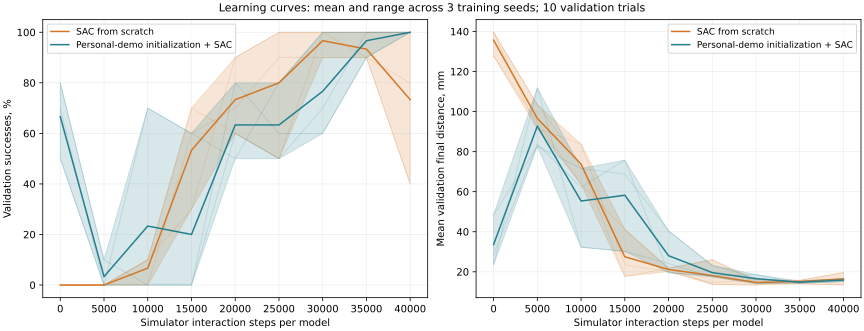
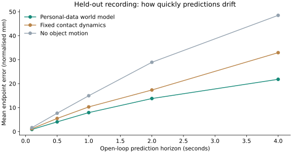

PERSONAL DATA → ROBOT LEARNING
From home video
to precise robot control.
Five recordings of a finger pushing a red cap become a robot policy. Transfer it to a different arm, predict what contact will do, and measure whether the object actually fits inside the target.
What is learned? The approach policy and object-motion model. The final precision controller uses known geometry. Policies receive simulator positions; images supply training demonstrations. Language is not an input.
START HERE / THE COMPLETED TASK
Make success mean finished.
The red puck must fit completely inside the green circle and stay there for one second. Replay measured states, inspect the controller handoff, and compare with the unchanged learned policy.
Same task and checkpoint. The dashed lines show the old 18 mm rule and the whole-object 8 mm rule. The vertical marker follows the replay.
THE CHECKABLE DIFFERENCE
Same weights. A stricter goal.
The old evaluator stopped at 18 mm. Continuing toward 8 mm lets some unchanged policies finish already. Explicit feedback takes over within 30 mm, tapers the push, and releases contact. Both versions receive the same 120-decision budget.
| Approach strategy | Policy alone | With precision feedback | Mean error with feedback |
|---|
Why did the old videos stop outside the circle?OPEN THE METRIC AUDIT +
18 mm was too generous.
The old rule checked the object’s centre, not its edge. Full containment needs 20 − 12 = 8 mm. At 18 mm, the object can extend 10 mm beyond the target.
This slider only re-scores saved final distances from the original runs. It does not rerun a controller or verify a new hold. Seed 1, same 20 paired cases.
Inspect the native MuJoCo video SAME STATE TRACE +
The task view above reconstructs saved joint angles and object positions. This video renders the same measured trajectory in MuJoCo. Native videos are included for the three seed 1 strategies, with and without feedback.
01 / THE SOURCE
Small data. Every clip accounted for.
Coloured markers track the fingertip and object. The drawn target circle provides a relative task frame, even when the phone moves slightly.
Circle radius → chosen 20 mm simulator radius. Distances are normalised; the recording’s real physical scale was not measured.
02 / THE EMBODIMENT GAP
Change the robot.
Keep the contact-space policy.
A compact arm adds a third joint, a narrower tip, a heavier object and a joint-command speed limit. Copying actions directly becomes unreliable.
Planar 2R
2 joints · 620 mm total link length
8 mm tip · 25 g object
Compact 3R
3 joints · 540 mm total link length
3 mm tip · 50 g object · 0.25 rad/s command limit
Normalise the tool-object displacement by the ratio of contact radii: 20 / 15. Undo that scaling for actions, then solve bounded inverse kinematics. This accounts for tool geometry; physics still determines object motion.
ORIGINAL TRANSFER STUDY
This original criterion permits partial overlap. Full containment needs 8 mm; see the precision experiment above. The same 20 tasks repeat across model seeds.
| Method | Seed 0 | Seed 1 | Seed 2 | Mean final distance |
|---|
The finding: contact normalization succeeds across all three frozen policies. Additional target RL introduces one failure; it does not improve the transfer result. A controller written for this embodiment is included alongside the original source controller.
Full transfer results, constraints and individual trials ↗03 / BOOTSTRAP, THEN LEARN
Your demonstrations change the starting point.
Train the actor’s actions on three personal clips, then let SAC learn through robot contact. Human transitions never enter the robot critic or replay buffer.

Validation trajectories are separate from training. The final fixed-budget checkpoint is evaluated; curves do not select the best weights.
SOURCE ROBOT · FINAL TEST
40,000 simulator interactions per learned model, three seeds. MPC and classical feedback each solve 20/20 source-arm trials without simulator policy training.
Imitation gives a useful start, but early SAC updates temporarily forget it. The final result improves over imitation alone; it does not establish a uniformly faster learning curve or superiority to classical control.
Original SAC study and resource accounting ↗USE PERSONAL DATA AFTER SIMULATOR PRETRAINING
Post-train an existing policy on the recordings.
Start with each scratch SAC checkpoint after 40,000 simulator interactions. Fit its actor to the same training-only fingertip actions for 200 supervised updates, with a smaller learning rate and no new simulator training. Critics stay unchanged.
Post-training outcomes and videos ↗04 / PREDICT THE CONTACT
A world model you can inspect.
Predict object motion from the recorded finger actions. Project those states back onto the held-out footage, and watch errors accumulate without correcting the predicted object position.
Green: tracked object. Cyan: learned prediction. Orange: fixed contact model. The footage is recorded; the overlay visualises predicted states.

One test recording. Non-overlapping windows decrease from 111 at one step to 2 at forty steps. Distances use the chosen simulator scale.
WHERE THE MODEL HOLDS UP
Robot checks use achieved tool displacement and an unmodified model. Error-radius coverage is empirical, not a guarantee. Future finger actions are supplied; images, tool motion, and language are not predicted.
Prediction windows and domain diagnostics ↗05 / THE INFERENCE PATH
Keep the weights.
Remove the overhead.
Deploy the deterministic actor without the SAC training and distribution wrappers. Benchmark complete action requests, including state encoding and action clipping.
Local CPU · 3,000 timed requests per method · 100 warm-ups · alternating timing blocks. No simulator or rendering inside the measured request.
faster median actor inference
Identical tested actions and states
All 20 physical rollouts reproduce the original actor’s traces bit for bit.
Loading
NumPy removes the Torch dependency from the actor. Floating-point differences can change contact trajectories.
WHAT DIDN’T WORK
The failures belong in the submission.
Successful first-trial videos are not enough. These failure replays were checked against the saved simulation states.
Direct-transfer seed 1 fails all 20 target trials. Its mean goal error is only 19.6 mm, close to the 18 mm threshold: the full distances matter as well as success counts.
Post-training seed 2 leaves the object 111.6 mm from the goal in trial 3. The frozen adapted policy succeeded in that trial. More training did not guarantee improvement.
REPRODUCIBLE BY DESIGN
Follow the evidence.
Run the experiment.
Python, PyTorch, Stable Baselines3 and MuJoCo. A static report with no Node build, account, external font, or hosted service.
python -m pip install -e '.[dev,analysis,rl]'
pushbridge serve --port 8767
# Open http://127.0.0.1:8767/